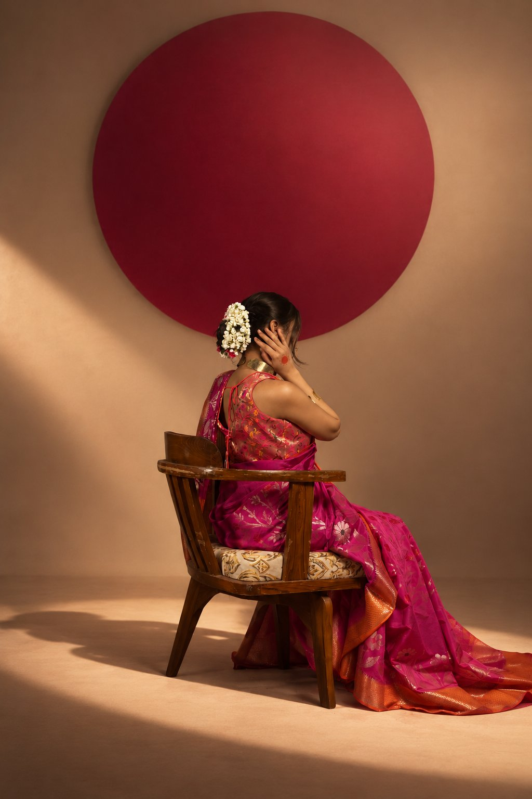
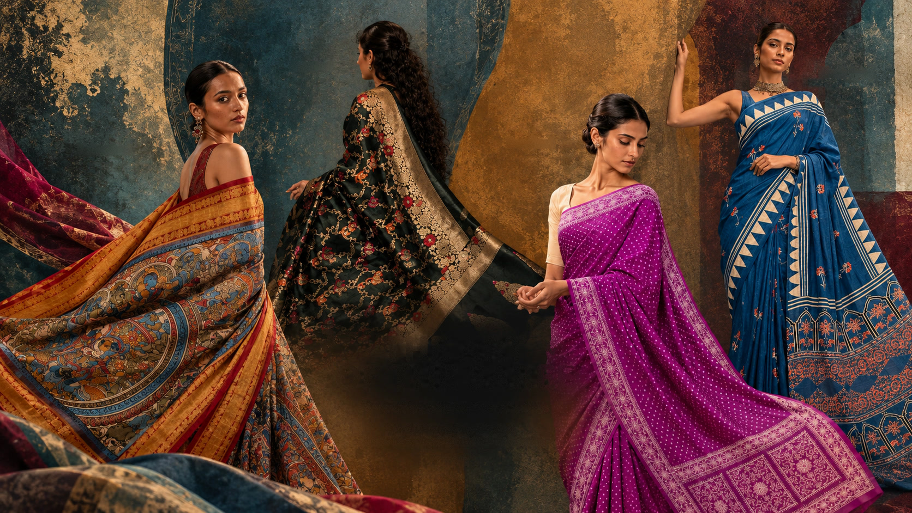

The art of the saree
Five traditions. Generations of artistry.
Painted, printed and woven by hand,
discover the textile traditions behind our collection.
The Dulhan Edit
New arrivals
Shop by
Edit
The collection, grouped by mood: deep colour, bold borders, daylight brights, soft pastels and festive evenings.
ExploreColour story
Colour, woven.
Every shade here is sampled from a saree in the collection. Hover to see the fabric it came from.
Shop all sareesThe art of Indian craftsmanship
Woven with heritage. Crafted with soul.
Discover the beauty of India’s timeless textile traditions, where every weave tells a story of artistry, culture, and generations of craftsmanship.
Explore our crafts